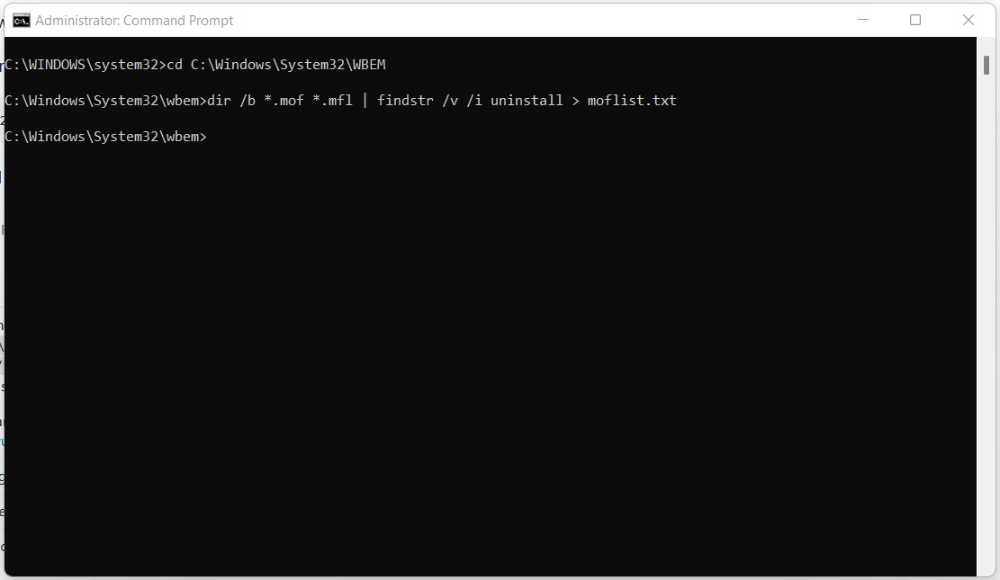
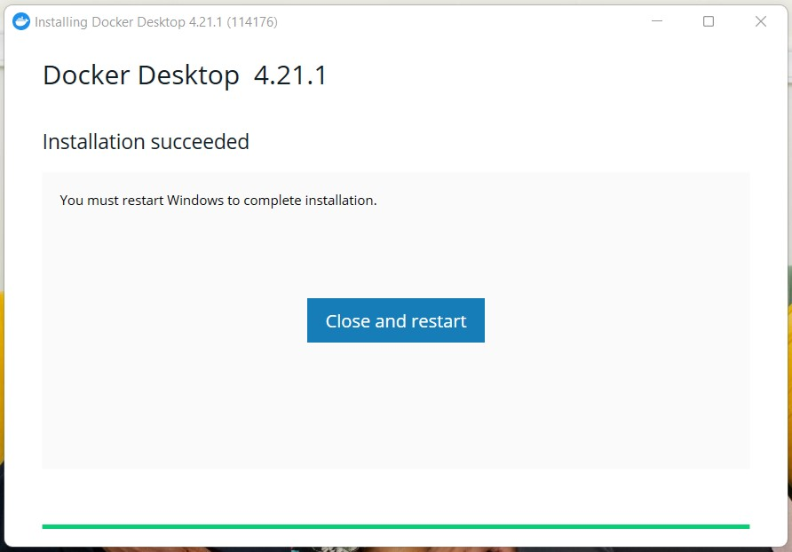
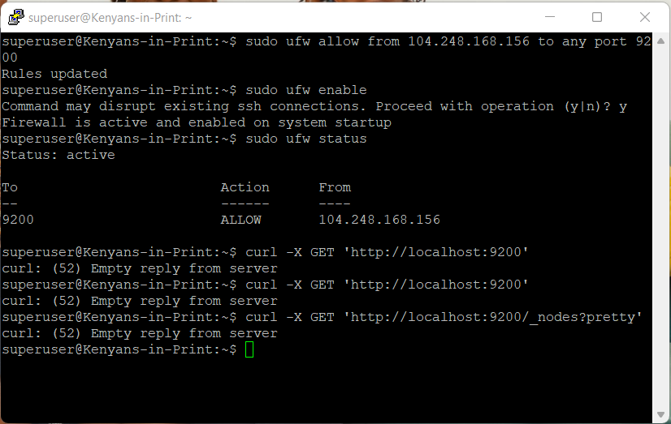

Database Setup Notes
Contents
Database Setup Notes¶
NoSQL Database¶
The database of choice that I decided to adopt in this category was ElasticSearch.
Options for reading this article
A lot of trial and error took place to get to my installation solution over a period of almost 6 months.
If you wish to fast-forward to how I installed ElasticSearch successfully, read Attempt 2.
The errors I realized (and then fixed) simplified were:
If you wish to learn more about my journey, keep reading the next section.
Local ElasticSearch setup¶
Based on the page where one could get started, I went to their download page.
I decided to first set it up locally on my Windows.
Docker setup on Windows: my experience¶
Elasticsearch runs within a Docker container, so I went here to download Docker Desktop.
If you directly attempt to install Docker Desktop, you get the following error:

As per the guidance in this article I managed the Windows Management Instrumentation (WMI) by entering my Command Prompt and running the commands below:


I then rebooted and voila!

However when I started Docker, I got the following notice:

So as per the advice in these 2 articles (here and here), I ran the following commands in Windows Powershell as an admin:

However, due to the error shown, I had to navigate to control panel “Turn Windows Features on or off” and select the checkbox for the feature pointed at (as you can see, it was off):


Once I checked it and the update finished installation, I got the following prompt to restart my machine:

To turn on Virtualization in the BIOS menu, as per this article,
when restarting the computer, press esc and F10 until you access the black screen appears click F10 to enter the BIOS menu.
Once in the BIOS menu, navigate to the Virtualization option and select Enable.
When opening Docker again, I got a new error:

When I went to this link, I ran the
wsl.exe --update command in Powershell as an admin like so:

Voila! The docker engine can now run.

To configure memory to 4 GB as per the ElasticSearch README file in the installation package,
I followed this resource,
this resource and
this resource
to create a .wslconfig file.
I then ran the following commands:

This caused the following prompt to appear:

Once I clicked Restart, the WSL debugger and Docker opened and ran the updates from the .wslconfig file like so:
Warning:
Update: When I attempted to open docker in a new session after restarting and effecting the configuration settings, I was unable to start Docker (both normally and as an admin). I was forced to do a Factory Reset to get Docker up and running once more.
ElasticSearch Setup¶
In the virtual environment of my project, as per the ElasticSearch README file in the installation package I ran the following commands:
docker network create elastic
docker pull docker.elastic.co/elasticsearch/elasticsearch:8.8.2
This enabled me to install ElasticSearch successfully, as per the status below:

For my purposes, I only installed ElasticSearch and Kibana.
Warning:
As per these instructions, I installed components in the following order:
ElasticSearch:
docker pull docker.elastic.co/elasticsearch/elasticsearch:8.8.2
docker network create elastic
docker run --name elasticsearch --net elastic -p 9200:9200 -p 9300:9300 -e "discovery.type=single-node" -t docker.elastic.co/elasticsearch/elasticsearch:8.8.2
Kibana:
docker pull docker.elastic.co/kibana/kibana:8.8.2
docker run --name kibana --net elastic -p 5601:5601 docker.elastic.co/kibana/kibana:8.8.2
16.08.2023 Update:
However, it was very difficult to replicate results, and wsl (Linux in a Windows environment) is not a debugging platform.
This meant that for almost 2 weeks, my Windows machine was hanging, and security components for ElasticSearch did not automatically
install, making it impossible for the enrollment code needed by Kibana to be generated.
For this reason, I decided to install ElasticSearch and use it in a Virtual Private Server.
Virtual ElasticSearch setup¶
Attempt 1¶
My first attempt was guided by this article.
The first error I came across was (even after successfully running ElasticSearch and Kibana on the server)
having empty responses from the server and not being able to connect to the server internally
as shown by the screenshots below:


Lessons Learnt after the 1st attempt
The default setup of elasticsearch creates self-signing certificates making it difficult to user
curlto connect.If you attempt to access the database from the command line, it may require addition configurations to your VPS.
Attempt 2¶
I then attempted to set up ElasticSearch as a package within the server itself instead of installing from the archive as per this article and this article.
The first error I came across was this one:

I used this article, this article and this article to resolve the problem, as shown below:


Run once more:
sudo nano /etc/apt/sources.list.d/droplet-agent.list


The service install for both elasticsearch and kibana went smoothly from that point as shown below:


However, I ran into the same problem faced in attempt 1:


Lessons learnt after the 4th attempt that changed Attempt 2 from failure to success
Key Articles:
https://www.digitalocean.com/community/tutorials/initial-server-setup-with-ubuntu-22-04
https://www.elastic.co/guide/en/elasticsearch/reference/current/deb.html
curl -fsSL https://artifacts.elastic.co/GPG-KEY-elasticsearch | sudo gpg --dearmor -o /usr/share/keyrings/elastic.gpg
What made the above code work is:
-fsSLsilences all progress and possible errors (except for a server failure)https://artifacts.elastic.co/GPG-KEY-elasticsearchis where the Elasticsearch public signing key is located|means collect of the output from thecurl -fsSL https://artifacts.elastic.co/GPG-KEY-elasticsearchcommand and pipe into thegpg --dearmor -o /usr/share/keyrings/elastic.gpgcommandsudois the command that allows a user with admin rights act like therootusergpg --dearmorcommand converts the key into a format that theaptpackage can recognize and use to verify downloaded packages
echo "deb [signed-by=/usr/share/keyrings/elastic.gpg] https://artifacts.elastic.co/packages/7.x/apt stable main" | sudo tee -a /etc/apt/sources.list.d/elastic-7.x.list
What made the above code work is:
echodisplays the output from"deb [signed-by=/usr/share/keyrings/elastic.gpg] https://artifacts.elastic.co/packages/7.x/apt stable main"where:The
debpackage is signed by (signed-by=) the key readable byapt-/usr/share/keyrings/elastic.gpgThe location of the
debpackage ishttps://artifacts.elastic.co/packages/7.x/aptif downloading the latest version of ElasticSearch 7.x (versions in this series are from 7.0 up to 7.17)The suite of the package being downloaded is a stable release (
stable) and does not have any dependencies that need to be installed alongside it (main) as per this article.
Output from
echo "deb [signed-by=/usr/share/keyrings/elastic.gpg] https://artifacts.elastic.co/packages/7.x/apt stable main"is a list file (elastic-7.x.list) piped to thesources.list.ddirectory where it will be recognized byaptthrough theteecommand, which writesstdout(output) to file-atellsteethat while writing to not overwrite the files but instead append to the list file as per this article.
sudo apt update
The above code updates all package lists on the machine so that APT can recognize the new Elastic source.
With the above pre-work complete, we can now install ElasticSearch:
sudo apt install elasticsearch
The next step is to configure network settings in the elasticsearch.yml file to recognize localhost; at this point, you can name your node and cluster.
After configuration, you can start, then enable ElasticSearch (to run upon system startup every time) using systemctl by running the following commands:
sudo systemctl start elasticsearch
sudo systemctl enable elasticsearch
Finally, the firewall is configured for the particular server to listen on the server where we installed ElasticSearch e.g.
sudo ufw allow from 198.51.100.0 to any port 9200
sudo ufw enable
When you test your db with curl -X GET 'http://localhost:9200', it should now work!
Please Note:
echo "deb [signed-by=/usr/share/keyrings/elastic.gpg] https://artifacts.elastic.co/packages/7.x/apt stable main" | sudo tee -a /etc/apt/sources.list.d/elastic-7.x.list
After running the command above, you should get the following status after running sudo systemctl enable elasticsearch:
You may be tempted to change the code to:
echo "deb [signed-by=/usr/share/keyrings/elastic.gpg] https://artifacts.elastic.co/packages/8.x/apt stable main" | sudo tee -a /etc/apt/sources.list.d/elastic-8.x.list
However, what may happen is when you sudo systemctl enable elasticsearch the output highlighted in red will be missing:
An explanation for this can be found in ElasticSearch documentation:
Attempt 3¶
In my final (and partially successful attempt) I set up ElasticSearch within Docker on the server itself as per this article, this article and this article as shown below:
This will only work if logged in as a user with sudo rights.
Step 1: Prep the server to install Docker¶
Step 1 Commands
Commands ran were:
Update all packages in the server
sudo apt update
Install
apt-transport-https,ca-certificates,curlandsoftware-properties-commonpackages, just in case they are not installed.
sudo apt install apt-transport-https ca-certificates curl software-properties-common
Download and save the GPG key for the official Docker repository and have the downloaded repo recognized by APT.
curl -fsSL https://download.docker.com/linux/ubuntu/gpg | sudo gpg --dearmor -o /usr/share/keyrings/docker-archive-keyring.gpg
echo "deb [arch=$(dpkg --print-architecture) signed-by=/usr/share/keyrings/docker-archive-keyring.gpg] https://download.docker.com/linux/ubuntu $(lsb_release -cs) stable" | sudo tee /etc/apt/sources.list.d/docker.list > /dev/null
Update the system for the changes to be recognized and ensure that you are downloading from the official Docker website.
sudo apt update
apt-cache policy docker-ce
Step 2: Install Docker and set up the user to be recognized by Docker¶
Step 2 Commands
Commands ran were:
Install Docker.
sudo apt install docker-ce
Check that Docker is running.
sudo systemctl status docker
Avoid typing
sudoin front ofdockercommands by addingsuperuserto the docker user group.
sudo usermod -aG docker superuser
su - superuser
Confirm that
superusernow belongs to thedockergroup.
groups
Step 3: Prep system for Elasticsearch and pull the Elasticsearch image from Docker¶

Step 3 Commands
Commands ran were:
Determine current maximum RAM memory allocation.
sudo sysctl -a | grep vm.max_map_count
Set the required maximum RAM memory allocation required by ElasticSearch.
sudo sysctl -w vm.max_map_count=262144
Create a new Docker network for ElasticSearch called
elastic.
docker network create elastic
Download/Pull from Docker the ElasticSearch image.
docker pull docker.elastic.co/elasticsearch/elasticsearch:8.11.3
Step 4: Pull the Kibana image from ElasticSearch¶
Step 4 Commands
Commands ran were:
Download/Pull from Docker the Kibana image.
docker pull docker.elastic.co/kibana/kibana:8.11.3
N/B: Ensure that the version number of Kibana matches the version number of ElasticSearch.
Step 5: Configure ElasticSearch for the first time¶
In a new terminal, run a new Docker container for ElasticSearch named kip-db (or any other name of your choice) that is 1GB in size within the elastic network by typing the command below:
docker run --name kip-db --net elastic -p 9200:9200 -it -m 1GB docker.elastic.co/elasticsearch/elasticsearch:8.11.3
When starting up for the first time, it will output the below:

In another new terminal, run a new container for kibana named kib01 within the elastic network by typing the command below:
docker run --name kib01 --net elastic -p 5601:5601 docker.elastic.co/kibana/kibana:8.11.3
When starting up for the first time, it will output the below:

As per the instruction from the terminal running Kibana, I input http://143.244.182.146:5601/?code=461789 and pasted the enrollment code (copied from the terminal running ElasticSearch) as shown below:
I clicked the Configure ElasticSearch button with the following results:
Once configuration was complete, I was able to log in using the username and password as per the instruction from the terminal running ElasticSearch:
Resulting in the following homepage:
And one can add a point of ingestion of data, as shown below:

Step 5 Notes
Once the credentials in each of the terminals are displayed, take note of them. I recommend taking a snip of the 2 terminal outputs.
The reason you don’t run
http://0.0.0.0:5601/?code=461789orhttp://localhost:5601/?code=461789is because your browser is installed locally and you need to access remote server IP address143.244.182.146to access Kibana.
Previous attempts to configure the browser on the server and usingcurldid not work, so it’s easier to access Kibana from your local device instead of from the server.If done with setup and with no other task to complete, you can close ElasticSearch as follows:
Log out of Kibana from the local browser and close the tab
Return to the terminal where Kibana is running and
Ctrl+Cto shut it down, then close the terminal with theexitcommandReturn to the terminal where ElasticSearch is running and
Ctrl+Cto shut it down, then close the terminal with theexitcommand entered twice.
Warning!
Do NOT attempt to copy output from the terminal via Ctrl+C! Right-click, then select Copy or type manually in a text editor on your local machine to avoid interfering with the background processes.
Lessons learnt after Attempt 3 changed from success to failure
Installing the db as a Docker container allows you to set up successfully, but it becomes very difficult to access it the 2nd time entering the server - in this way, it becomes largely unusable.
Following this approach makes it difficult to automate in the future and keep ElasticSearch continuously running.